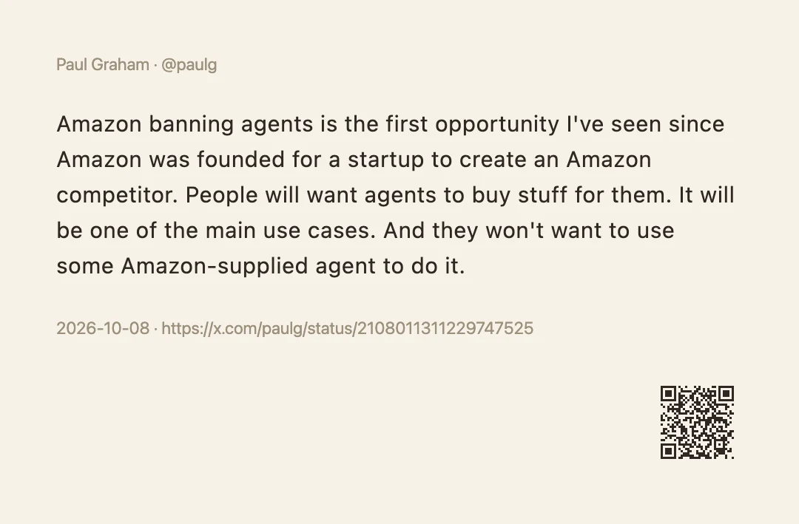
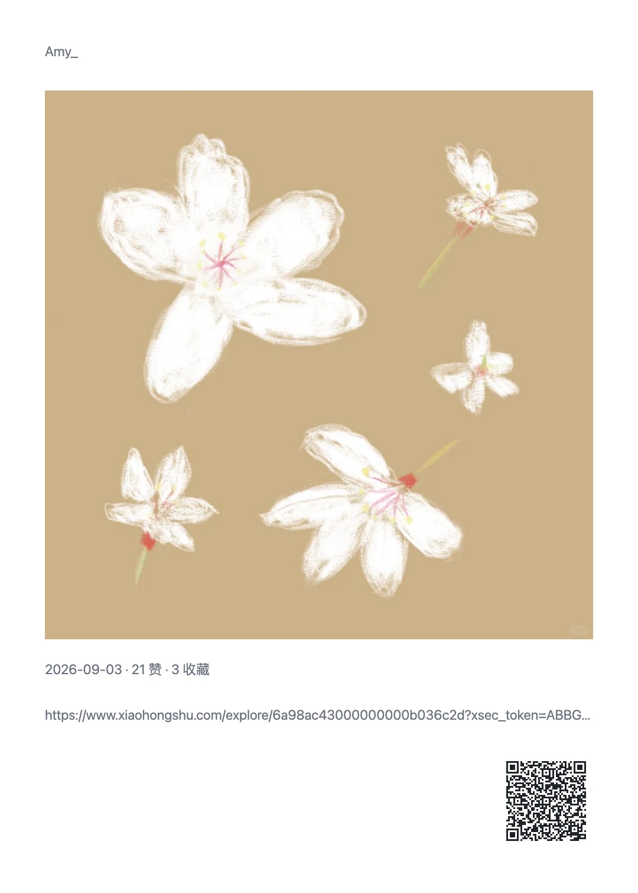
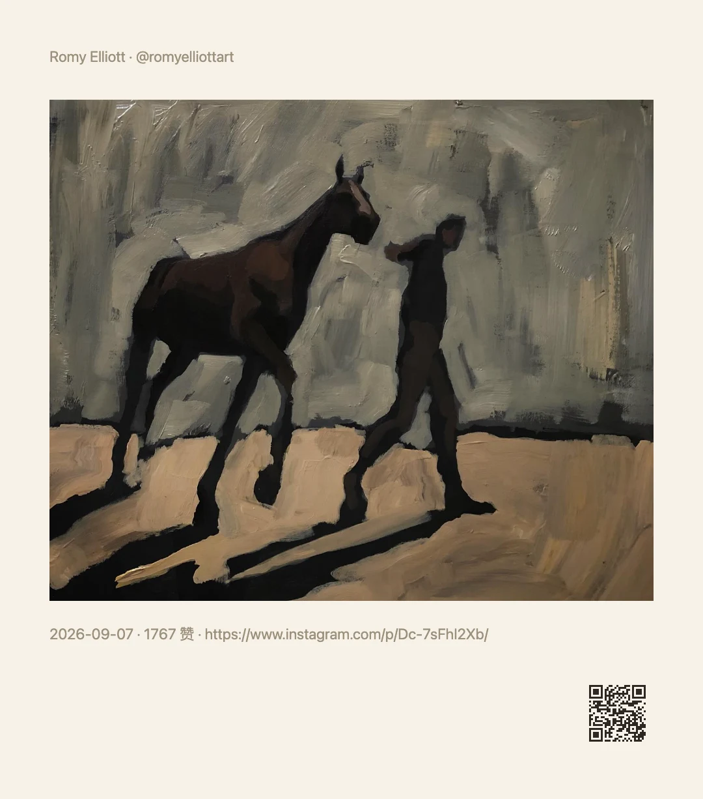

不用裁、不用拼
卡片版式是排好的：作者在顶、正文居中、图片按比例、元信息在底。你不用对齐、不用留白、不用调字号。
用例 · 分享图卡片
看到一条好内容想转发，截图要自己裁、还带着页面的按钮和推荐位；手动拼图更麻烦。 顺手把这一页直接排成一张干净的卡片——作者、正文、配图、日期各归其位， 右下角带一个能扫回原文的二维码。点一下出图，复制就能发。
零配置 · 不联网也能出图 · 不需要账号与 API



为什么不用截图
截图快，但发出去的东西是别人网页的一部分：导航栏、点赞按钮、旁边的推荐位都在里面， 还得自己裁掉；裁完尺寸不统一，发到不同平台再被压一次。
分享图是把这一页的内容重新排一遍：谁写的、说了什么、配了什么图、什么时候发的—— 固定尺寸、统一边距，发出去就是一张成品。
上面三张不是三个功能，而是同一个「分享图」能力在三个站点上取各自字段的结果—— 所以新站点不用等适配：给它几个字段，它就能出图。
卡片版式是排好的：作者在顶、正文居中、图片按比例、元信息在底。你不用对齐、不用留白、不用调字号。
小红书笔记与 Instagram 帖子的轮播图会自动补全（不用一张张点开），排成图片墙；推文带上作者、日期、正文与配图。
打开「超长分页」，正文超过单张上限就自动切成多张，续页带标题与页码——长文也能完整发出去。
右下角一个二维码，扫码打开原页面；也可以换成「扫码下载顺手」。二维码在本地生成，不联网、不上传。
不像存笔记要配后端，分享图装好就能用：不依赖账号、不依赖 API、不依赖网络。
出图后先留在结果弹窗里预览，满意再复制 / 下载；不会自动往你磁盘里塞文件，也不会替你发出去。
出图效果
下面都是真机出的图（未修图）。同一个动作在三个站点上分别取各自的字段，版式一致、内容按站点走。
出图即工作台
出图之后弹窗里就是预览：图太长看不清就点开大图；想换样子，展开「调整」直接改， 改的是这一次，满意了再「保存到动作」当默认。
纸感 / 墨感 / 品牌 / 纯白——从暖纸到纯白，深浅两套配色都跟着系统切换。
长图（自动高度）/ 4:5 / 3:4 / 1:1——发朋友圈、发小红书、做封面各取所需；长图会尽量完整装下正文。
字体只使用你本机已装的（不联网下载），也可直接填任意 CSS font-family；背景色自定义时，文字与二维码会自动配成深 / 浅色。
卡片由若干块组成，每块是一个模板（可引用任何变量）：不想要日期就删掉，想把评分放前面就拖上去。
「分享全文」还能就地改这一次的正文——只影响本次，不落配置；确认满意了再存回动作。
默认不显示文字；想加署名就在水印里填。二维码三档：当前页面 / 品牌主页 / 关闭。
和标注搭起来
不一定非得整页。看到一句想发的话，划选它——浮条上的「分享摘录」出的就是这一段的卡片。 读到一半先标下来，最后一起处理也行。
选中一段话，点「分享摘录」：卡片就是这段话 + 来源，适合把书里、文章里的一句发出去。
划选点「高亮」，标注就留在页面上——刷新、重开都还在，而且不改动网页本身的结构。
再点一下可以复制这一条 / 取消（取消了还能撤销）；本页高亮能一次复制成文本，或存进笔记。
「AI 摘要卡片」先用你自己的模型把这段或这页摘成要点，再排成卡片——同一套版式，内容换成摘要。
出图之后可以接着做别的：复制图片贴进微信，保存文件，或者接一步「发推文」打开官方分享框预填——发布前永远由你确认。
还有这些用法
分享图是个通用能力：任何能取到字段的页面都能出图。
「分享全文」把整页正文与图片按阅读顺序排成卡片，超长自动分成多张、不截断——比滚动截屏干净得多，也不会把悬浮广告截进去。
豆瓣的书 / 影 / 游页各自解析出 17 / 20 / 11 个字段，可以出一张书目卡或影评卡；配上评分、封面、导演，比截图好看。
复制 owner/repo，或把仓库信息出一张卡片，适合在群里推荐一个项目。
视频信息、评论（含楼中楼）都能取；分享卡片适合发在群里而不是贴一条链接。
出的图可以直接保存到本地（文件名模板可配，如 顺手/{{date:YYYY-MM-DD}}/{{title}}），同名自动编号不覆盖。
X / 微博 / Bluesky / Telegram / Mastodon / Reddit——打开对方的官方分享框并预填内容，发布前由你在编辑框里确认。
常见问题
截图把页面的导航、按钮、推荐位一起截进去，还得自己裁；分享图只留内容——作者、正文、配图、日期，按卡片版式重排，尺寸固定、边距一致，发出去不会被平台再压一次。
另外截图是位图截屏，换主题 / 换尺寸都得重截；分享图改参数就地重绘。
能。轮播图的图片会自动补全（不用一张张点开），排成图片墙；推文则带上作者、日期、正文与配图。
取的是页面自己已经加载的图片，不会绕过登录、也不会去抓私有内容。
不会。打开「超长分页」后，正文超过单张上限会自动切成多张图片，续页带标题与页码，不截断长文。
不打开分页时，长图（自动高度）本身也能装下很长的正文（约 7000 字量级），超出才会按内容截断并加省略号。
能。出图后留在结果弹窗里，点一下复制图片，直接粘进微信、群聊或文档；也可以下载文件、保存到本地。
不想要二维码可以关掉，也能换成「扫码下载顺手」。「复制」就是复制——不会顺手往你磁盘里塞文件。
不需要。分享图零配置，不依赖任何账号、连接或 API：装好就能用，也不需要联网（二维码在本地生成，图片取的是页面已加载的内容）。
可以。水印文字、背景色、字体都能改；四种主题（纸感 / 墨感 / 品牌 / 纯白）与四种尺寸（长图 / 4:5 / 3:4 / 1:1）随内容选，改完还能存回动作当默认。
免费使用，没有广告，也没有需要付费解锁的功能；不需要注册任何账号。配置只存在你的浏览器里。
安装
商店装的两家都会自动更新；油猴脚本适合手机或不想装扩展的场景。
桌面首选，装好即自动更新。
与 Chrome 同一内核，功能一致。
先装脚本管理器（Tampermonkey / Violentmonkey；Android 用 Firefox，iOS 用 Safari + Userscripts），再装脚本。